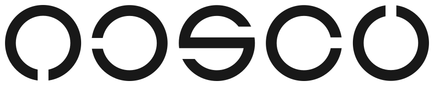

Quiet authority
Strong typography, generous space, and precise alignment. No noise for the sake of looking busy.

OCSCO / Official baseline / v1.0
The visual system for OCSCO’s public website and future platform. Calm, architectural, and built to make strategy, design, and technology feel like one connected practice.
01 / Foundation
Every choice should make OCSCO feel capable, composed, and specific. The system creates confidence through hierarchy and substance rather than decoration.
Strong typography, generous space, and precise alignment. No noise for the sake of looking busy.
One dominant message and one obvious next action in every important viewport.
Visual polish must support explanation, proof, and conversion.
Brand, website, CMS, CRM, and applications should feel related and intentional.
02 / Color
Green is an action and emphasis color, not a decoration. Black creates rhythm and authority; light surfaces give the content enough room to speak.
03 / Typography
Use Plus Jakarta Sans across the system with a deliberate weight hierarchy: 400 for body, 500 for navigation, 600 for strong labels, 700 for subheadings, and 800 for hero and major headings.
Systems that move the work forward.
Clarity is a competitive advantage.
Built for the way your team works.
OCSCO integrates strategy, design, and technology to build digital systems that make ambitious businesses clearer, stronger, and ready for what comes next.
Strategy / Design / Technology
04 / Layout
Use an 8px baseline grid, generous section spacing, readable content measures, and no more than three content columns. Editorial balance matters more than filling every gap.
05 / Logo
The supplied OCSCO wordmark is the primary identity. Use the appropriate color variant for the surface. Do not recreate, crop, outline, rotate, or place it inside a decorative circle.
White on Ink

Black on White
Black on Green
06 / Art direction
The OCSCO hero can use a dark editorial field with soft glass planes and low-amplitude animated grain. It should create depth and presence while keeping the message and action in control.
prefers-reduced-motion and never make motion necessary to understand the page.07 / Iconography
Use Lucide React for the application: a consistent 24px line-icon family with a 1.6px stroke. Icons clarify capabilities, actions, and system concepts; they never replace a meaningful label.
Branding
Website design
Custom CMS
Business tools
Web applications
Use icons beside a visible heading, link, or button so the intent remains clear to every visitor.
Keep the same stroke, size, corner treatment, and optical weight across the public site and future platform.
Use green for active, actionable, or selected states. Keep neutral icons quiet on content surfaces.
08 / Components
Components should feel precise and useful. Use pill-shaped action controls, 8px active navigation surfaces, 12px structural surfaces, quiet borders, and one clear action hierarchy.
Default links stay quiet. Hover and active links use a compact graphite surface with an 8px radius.
Digital experiences that turn clarity into trust and trust into momentum.
09 / Content voice
Lead with outcomes and clarity. OCSCO should sound like a partner and architect, not a commodity vendor.
10 / Implementation
This guide is the official v1.0 visual reference for the public website and future platform surfaces. Future changes should be versioned as v1.1 or v2.0 rather than silently changing this baseline.
Maintain WCAG AA contrast, visible keyboard focus, meaningful heading order, labelled controls, and reduced-motion support.
Use restrained 200–300ms ease-out transitions. Avoid auto-playing sliders, pop-ups, particle effects, and decorative motion.
Brand files live in /public/brand. Favicons live in /public/favicon. Prefer approved OCSCO or client work over generic stock imagery.
Apply the system consistently across Home, Services, Work, About, Contact, and future CMS-driven content.
Case studies, testimonials, client names, outcomes, and metrics require owner approval and evidence before publication.
v1.0 is the locked official baseline. Non-breaking refinements become v1.1; structural or visual-system changes become v2.0 and require owner approval.